Shark Bay
Sunrise
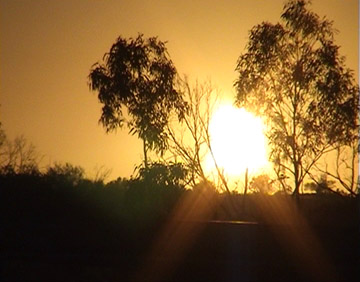
Stromatolites - ancient living fossils:
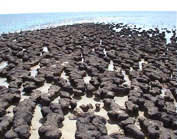 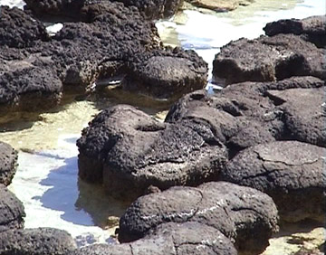
The famous Dolphins of Monkey Mia - here's Nicky and Surprise:
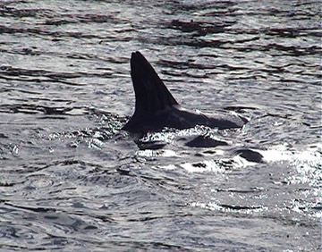
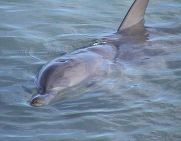 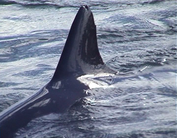 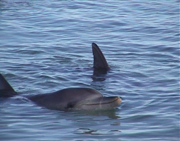 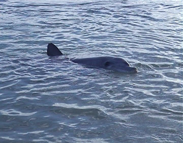
Various birds - tern, swallow, pelicans
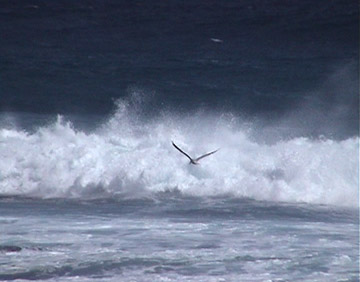
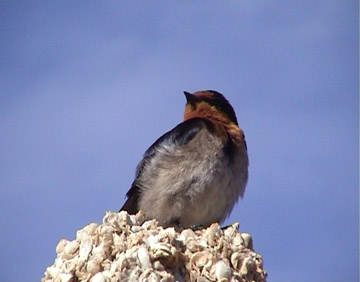
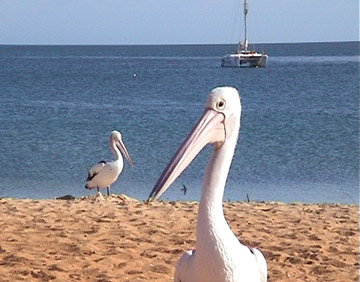 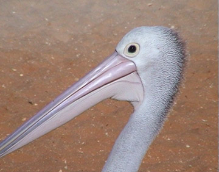 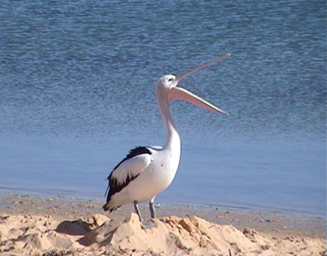
Scenery - Nature's Window and Sunset
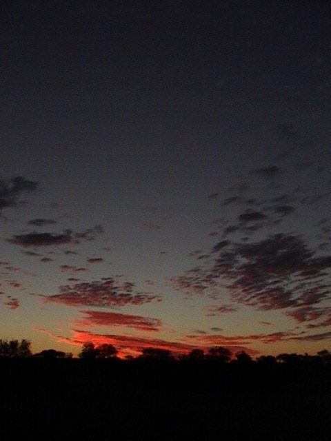
Travel Pages
 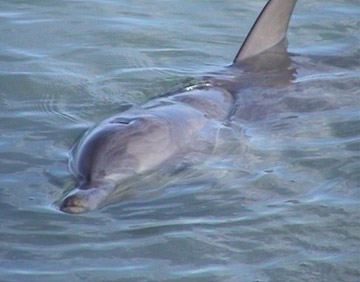
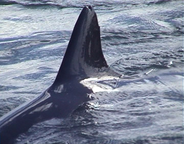
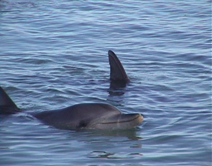
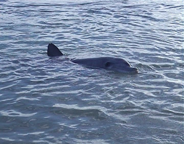
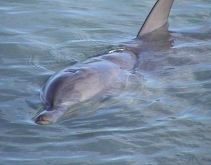
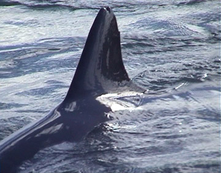
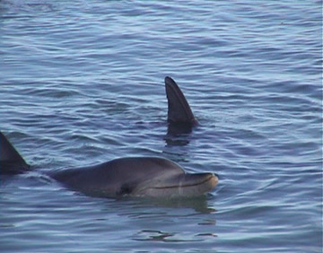
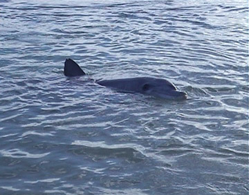